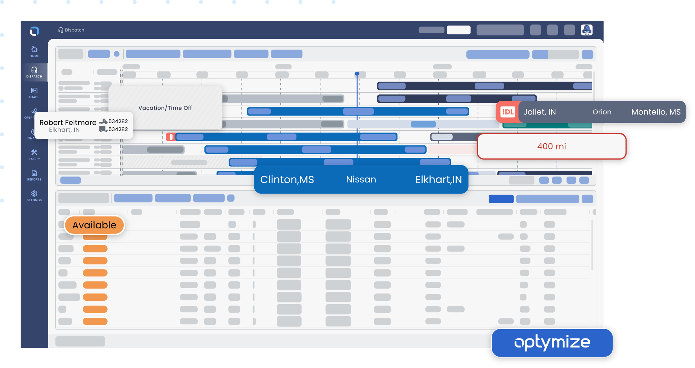

Stabilize access
Stabilize login, token refresh, password reset, and mobile error paths across driver app and web sessions.
Saw Optym is hiring a Senior Backend Node.js engineer for optimization workflows. This brief shows where a small Elinext squad could remove delivery risk first.
Why we're here: the hiring signal points to API and service pressure behind LoadOps, LoadAi, and real-time dispatch work.

Optym's hiring signal tells us you are adding senior backend capacity, not just filling a seat. LoadAi and LoadOps both depend on fast APIs, live dispatch data, loadboard connections, and mobile driver events. That creates a bottleneck when algorithm, product, frontend, and QA teams all need backend changes at once. If those paths stay thin, planner features ship slower and field issues land back on engineering. The public LoadOps app feedback points to two sensitive flows: login and document upload.
Recent LoadOps reviews mention login and password-reset failures while Google Play notes password-field fixes. Add auth telemetry, reset-path tests, and clearer mobile errors before more feature work.
LoadOps sells document capture as a faster-payment path, yet reviews mention failed uploads. Test poor-network scans, retry states, and billing handoff next.
Run a dedicated squad under Optym's product owner for a six-week pilot. Team shape: one backend tech lead, two senior Node.js engineers, one QA automation engineer, and DevOps support.
Stabilize login, token refresh, password reset, and mobile error paths across driver app and web sessions.
Harden document upload, scan, retry, and billing handoff so driver paperwork does not block payment.
Build contract tests around loadboards, ELD, factoring, and TMS feeds used by dispatch workflows.
Add release dashboards and weekly QA checks for the driver app, dispatch web flows, and backend APIs.

Built mobile and web workflows for driver task acceptance and live location streams. The app streamlined work for customers and drivers.
Read case study
Extended backend services, Android barcode flows, QA, and ERP integration for a logistics workflow with fewer manual steps.
Read case study